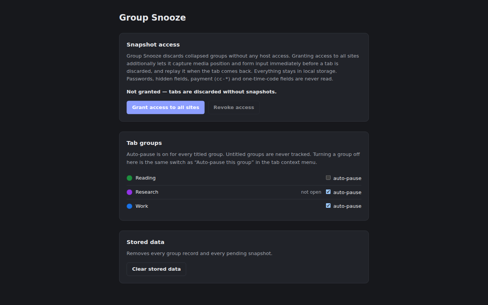

Collapse a Chrome tab group and its tabs are discarded — the memory goes back to your machine. Expand it and your video position and half-typed forms come back with them.

No extra UI to learn. Collapsing a tab group discards every tab in it, immediately.
Video and audio come back at the second you left them, not at zero.
Text, textareas, checkboxes and selects are replayed when the tab wakes up.
Passwords, hidden fields, payment fields and one-time codes are excluded from capture.
Auto-pause is on for every titled group, and one click turns it off for the ones you want left alone.
No persistent content script. One function runs at discard, one at restore. That is all.
beforeunload does not fire on a discard.Collapsing is immediate and has no grace period, so an accidental collapse-and-expand costs a full reload of the group. Audio in a collapsed group stops. Both are deliberate. Untitled groups are never tracked and never discarded.
Group Snooze discards collapsed groups with no host access at all. Reading media position and form values needs access to page content, so that permission is optional — you grant it yourself from the options page, and the extension works as a plain discarder without it.
input[type=password] and input[type=hidden]autocomplete starting with cc-autocomplete="one-time-code" fieldsautocomplete="off"
Snapshots live in chrome.storage.local, are never transmitted anywhere,
and are deleted on restore, on a URL mismatch, on tab close, or after 24 hours.
Full detail in the privacy policy.
Download the zip from the
latest release,
unpack it, then load it at chrome://extensions with Developer mode on
and "Load unpacked".
Requires Node.js >= 22 and pnpm >= 10.
$ pnpm install
$ pnpm run build